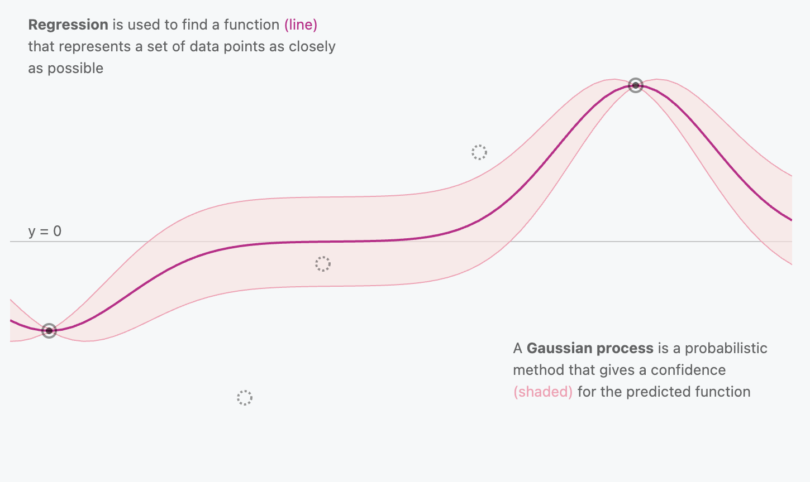

"A Visual Exploration of Gaussian Processes"
In this project, you will implement a Gaussian Process regressor. First create a GitHub Classroom team and clone the project3 repository.
The code for this project (project3) consists of several files, some of which you will need to read and understand in order to complete the assignment, and some of which you can ignore.
| Files you'll edit: | |
l2distance.py | Computes the Euclidean distances between two sets of vectors. This should be done as efficiently as possible (hint: no loops!) |
linearkernel.py | Computes the linear kernel matrix given input vectors. |
polynomialkernel.py | Computes the polynomial kernel matrix given input vectors. |
rbfkernel.py | Computes the RBF kernel matrix given input vectors. |
gaussianprocess.py | Implements the Gaussian Process class, including functions for fitting the data and making predictions. |
negative_log_predictive_density.py | Computes the negative log predictive density. |
standardize.py | Includes functions for standardizing and "unstandardizing" the target values. |
crossvalidate.py | A function that uses cross validation to find the best kernel, kernel parameter, and noise parameter. |
main.py | A script with prewritten code for testing your implementation and where you'll save your best parameters. |
| Files you might want to look at: | |
main.py | You may want to edit this function to create visualizations and to call your NLPD script. |
Allowed Libraries: Do not import any additional libraries in any file. This will cause the autograder to fail since using only numpy will be sufficient for a successful implementation.
How to submit: You can commit your code through the command line with git and submit on Gradescope either in a zip file or through Github. If the project is submitted before the initial deadline passes, you will receive information and a score for the performance evaluation (only once the deadline is reached).
However, the autograder will not reveal any information on how your code performed for any projects submitted during the three day extension period. You can submit your project as many times as you want but the final submission score will count for your grade. If you submitted by the initial deadline and would like to improve your performance score, you can submit again during the extension period.
Grading: Your code will be autograded for technical correctness. Please do not change the names of any provided functions or classes within the code, or you will wreak havoc on the autograder. However, the correctness of your implementation -- not the autograder's output -- will be the final judge of your score. If necessary, we will review and grade assignments individually to ensure that you receive due credit for your work.
PYTHON Version in Autograder: The autograder uses PYTHON 3.6. To rule out any incompatabilites of differnt versions we recommend to use any version of PYTHON 3.6 or newer for the implementation projects.
Regrade Requets: Use Gradescope for regrade requests.
Academic Dishonesty: We will be checking your code against other submissions in the class for logical redundancy. If you copy someone else's code and submit it with minor changes, we will know. These cheat detectors are quite hard to fool, so please don't try. We trust you all to submit your own work only; please don't let us down. If you do, we will pursue the strongest consequences available to us.
Getting Help: You are not alone! If you find yourself stuck on something, contact the course TAs for help. Office hours and Piazza are there for your support; please use them. If you can't make our office hours, let us know and we will schedule more. We want these projects to be rewarding and instructional, not frustrating and demoralizing. But, we don't know when or how to help unless you ask.
The goal of this project is to implement a Gaussian Process regressor. Remember that we model the predictive distribution $p(f_{*} | \mathbf{x}_{*}, D)$ by specifying a mean and covariance/kernel function:
$f$ | $\mathbf{x}$ ~ $\mathcal{GP}(\mu(\mathbf{x}$), k($\mathbf{x},\mathbf{x}$))and then conditioning on the training data D to get the GP posterior, which allows us to make predictions. In this particular project, we will be including a noise parameter in our implementation, so we use $D$ = {$X, \mathbf{y}$}, where $\mathbf{y} = f(X) + \epsilon = \mathbf{f} + \epsilon$. Assuming the noise to be independent and zero-mean Gaussian $\epsilon$ ~ $\mathcal{N}(0, \sigma_{n}^2)$ we have $p(\mathbf{y}$ | $\mathbf{f}$) = $\mathcal{N}(\mathbf{f}$, $\sigma_{n}^2I)$. After some manipulation, we get the following distribution:
$p(\mathbf{y}$ | $X)$ = $p(\mathbf{f} + \epsilon$ | $X)$ = $\mathcal{N}(\mu_{\mathbf{f}|X}$ + $\mu_{\epsilon}, \Sigma_{\mathbf{f}|X} + \Sigma_{\epsilon})$ = $\mathcal{N}(\mu(X)$, k($X,X$) + $\sigma_{n}^2I$)From here, we can condition on $\mathbf{y}$ | $X$ to get the predictive mean $\bar{f_{*}}$ (used for predictions) and predictive variance $cov(f_{*})$ (gives us a measure of uncertainty) for our GP posterior:
$\bar{f_*} = \mu(\mathbf{x}_*) + (\mathbf{x}_*, X)((X,X)+{\sigma_n^2 I})^{-1}(\mathbf{y} - \mu(X))$
$cov(f_*) = (\mathbf{x}_*, \mathbf{x}_*) - (\mathbf{x}_*, X)((X,X)+\sigma_n^2 I)^{-1}k(X,\mathbf{x}_*)$
These are what we want our GP.predict method to recover so that we have our target predictions along with a quantification of the uncertainty in those predictions.
We provide you with the classical Boston housing data set, which is loaded in main.py and split into xTr and yTr. The target is continuous and represents the price of a house in thousands of dollars ($).
First, implement the function:
gaussianprocess.pyThis involves implementing the GP class, which includes the functions for fitting the model and making predictions. Make sure to set up your GP such that it uses a ktype of either 'linear', 'polynomial', or 'rbf'. This is important because you will eventually save your parameters, and they need to be saved in a specific format for the autograder to extract them correctly. Make sure to use the Cholesky decomposition of $K + \sigma_{n}^2I = LL^{\top}$ to compute the inverse more efficiently in your predictive mean and predictive variance equations.
Next, implement the kernel functions:
K = linearkernel(X,Z)
K = polynomialkernel(X,Z,kpar)
K = rbfkernel(X,Z,kpar)
They take as input two data sets $\mathbf{X}$ in $\mathcal{R}^{d\times n}$ and $\mathbf{Z}$ in $\mathcal{R}^{d\times m}$ and outputs a kernel matrix $\mathbf{K}\in{\mathcal{R}^{n\times m}}$. The last input, kpar specifies the kernel parameter (e.g. the inverse kernel width $\gamma$ in the RBF case or the degree $p$ in the polynomial case.)
You should implement the function:
D = l2distance(X,Z)
to use as a helper function of the rbf kernel. This function calculates D(i,j) as the Euclidean distance of X(:,i) and Z(:,j). Eventually you want to make this efficient since the speed of this calculation will be used by the autograder to calculate your grade.
You should then implement the function in the standardize.py file:
y = standardize_targets(y)For GP regression, we often assume zero-mean targets to simplify the prediction equation used. We will be doing that in this case as well. We want to scale the targets down prior to fitting our GP model, but then we want to "unstandardize" them (i.e., transform them back to their original scale) before making our predictions so that the error term is more interpretable.y = unstandardize_targets(y_standardized, mean, std)
Another function you should implement is:
nlpd = negative_log_predictive_density(y_tests, y_preds, variances)This should implement the NLPD for GPs: $\frac{1}{n}\sum_{i=1}^n (\frac{1}{2}$log($2\pi\sigma_{i}^2$) + $\frac{(y_i - \mu_i)^2}{2\sigma_i^2}$). It will be tested on the standardized (hidden) test response.
If you play around with your new GP regressor, you will notice that it is rather sensitive to the kernel, regularization, and noise parameters. You therefore need to implement a function
best_kernel, best_noise, bestP, lowest_error = crossvalidate(xTr, yTr, ktype, noise_vars, paras)to automatically sweep over different combinations of the parameters and output the best setting on a validation set. There are many ways to implement this, and you can do it any way you want since this function will not be evaluated by the autograder. There is a default set of parameters to try included in main.py, but you probably want to expand this list and focus on the best performing parameters. Some code is commented out in main.py to help you visualize your cross validation. This will be most useful if you try many parameters.
Avoid using loops in your implementation of the L2 distance. Try to use matrix algebra and numpy functions to compute this efficiently.
With this dataset, we have significantly more samples than features. Consider if there is a type of kernel that works well in such scenarios.
Make sure to pre-process the target appropriately for use in a GP regressor — remember, we assume the target has zero mean!
We will be using RMSE to evaluate model performance.
25% of the grade for your project3 submission will be assigned by how well your GP regressor performs on the housing data test set using the kernel, kernel hyperparameter, and noise parameter you submit in best_parameters.pickle.
5% of the grade for your project3 submission will be assigned based on the speed of your l2distance.py function on large matrices.